<!DOCTYPE html>
<html lang="en-US">
<head>
  <meta charset=utf-8>
  <title>Basic Git/GitHub for Localizers</title>
  <link href="assets/css/style.css" media="all" rel="stylesheet" />
  <link href="http://fonts.googleapis.com/css?family=Open+Sans:400,700|Droid+Sans+Mono" rel="stylesheet" type="text/css">
</head>

<body>
	<div class="main">
		<h1>Basic Git/GitHub for Localizers</h1>

        <h2>Table of Contents</h2>
        <h3>Basic Usage</h3>
        <ul class="toc">
            <li><a href="#fork">Fork A Repository On GitHub</a></li>
            <li><a href="#clone">Clone Your Repository</a></li>
            <li><a href="#sync">Sync And Update Your Repository</a></li>
            <li><a href="#pr">Create A Pull Request</a></li>
        </ul>
        <h3>Advanced Usage</h3>
        <ul class="toc">
            <li><a href="#rebase">Rebase Your Branch</a></li>
            <li><a href="#reset">Reset Your Branch</a></li>
            <li><a href="#amend">Amend The Last Commit</a></li>
            <li><a href="#squash">Squash Your Commits</a></li>
            <li><a href="#bash">Bash Tips</a></li>
        </ul>
        <a href="#final">Final Suggestions</a>

        <h1>Basic Usage</h1>
		<h2 id="fork">Fork A Repository On GitHub</h2>
		<p>If you don’t have an account on GitHub, register one for free on <a href="https://github.com">github.com</a> and <a href="https://help.github.com/articles/set-up-git#platform-all">install Git</a> on your system.</p>
		<p>Once you login, go to the repository you’re interested in and create a “fork”.
		Let’s say you want to create a fork of <code>webpay</code>: go to <a href="https://github.com/mozilla/webpay">github.com/mozilla/webpay</a> and click on the <strong>Fork</strong> button in the top right part of the page.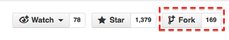</p>
		<p>This will create a fork – think of it as a copy – of the <code>webpay</code> repository in your own account. At this point your fork and the original repository share the same history, but will live separate lives from this moment on.</p>
        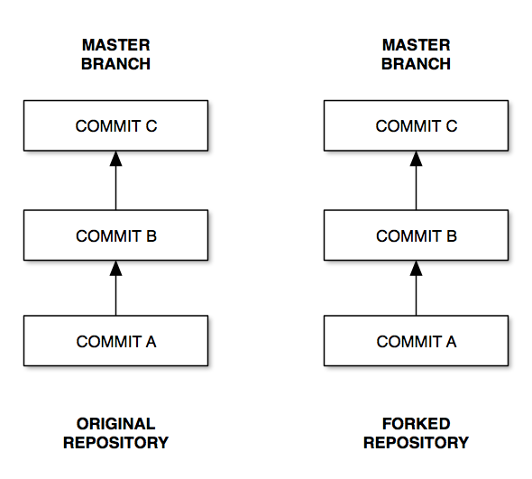

		<h2 id="clone">Clone Your Repository</h2>
		<p>Now you have to clone the repository on your computer. Suppose that your username is <code>l10nguy</code>, you need to clone <a href="https://github.com/l10nguy/webpay">https://github.com/l10nguy/webpay</a> and tell the system that you want to use the original Mozilla repository as a source for updates.</p>
        <p>These are the commands you need to run in your terminal (move into the folder where you want to keep your files before running them):</p>
		<pre>
# You’re cloning your forked repository, so github.com/YOURUSER/REPOSITORY
git clone https://github.com/l10nguy/webpay

# Move in the clone’s folder created by the previous command
cd webpay

# You’re telling Git to use another repository as a source.
# So not YOURUSER but MOZILLA in this case (owner of the original repository)
git remote add upstream https://github.com/mozilla/webpay</pre>

		<h2 id="sync">Sync And Update Your Repository</h2>
		<p>Now you have a local copy of your fork inside the folder <code>webpay</code>. Remember: your fork and the original source are now two separate entities. Suppose someone made a new commit on master to the original repository after you forked it: this commit won’t be automatically available in your fork.</p>
        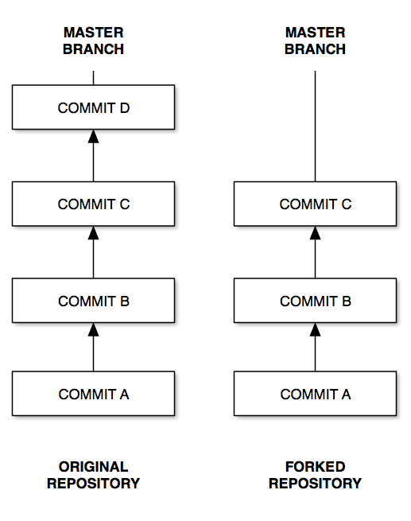
        <p>When you want to update your local copy, importing new changes from the original repository, you need to run these commands from inside the repository (i.e. the <code>webpay</code> folder).</p>
		<pre>
# Important: the following line will delete every local change. It’s useful to
# avoid conflicts and merges, if you know what you’re doing you can ignore it
# Stashed changes can be recovered: see http://git-scm.com/docs/git-stash
git stash

# Ensure that you’re on the branch called Master
git checkout master

# Pull changes from Mozilla’s repositories, merge to your repository and push
# changes to Github. We told Git what "upstream" is right after cloning
# the repository.
git fetch upstream
git merge upstream/master
git push</pre>
        <p>Provide your GitHub’s credentials and the updates will be pushed to your GitHub’s repository.</p>
        <p><strong>Note:</strong> you could get this error the first time you try to push:</p>
            <pre>warning: push.default is unset; its implicit value is changing in
Git 2.0 from 'matching' to 'simple'. To squelch this message
and maintain the current behavior after the default changes, use:

  git config --global push.default matching

To squelch this message and adopt the new behavior now, use:

  git config --global push.default simple</pre>
        <p>To fix it and adopt the new default behavior, simply run the last command from the command prompt (<a href="http://stackoverflow.com/questions/13148066/warning-push-default-is-unset-its-implicit-value-is-changing-in-git-2-0">more details here</a>).</p>
        <pre>git config --global push.default simple</pre>

        <h2 id="pr">Create A Pull Request</h2>
		<p>As a first step you need to create a branch in your repository, so you’ll have to choose a name for it. For example let’s call this branch <code>jul29_it</code></p>
        <p class="warning">You should never commit changes to master, since it will create merge conflicts when trying to update against the original (upstream) repository.</p>
		<pre>
# Create the branch
git branch jul29_it

# Ensure that you’re on the branch just created
git checkout jul29_it

# Push the new branch to your repository on GitHub
git push origin jul29_it</pre>
        <p>This is the result:</p>
        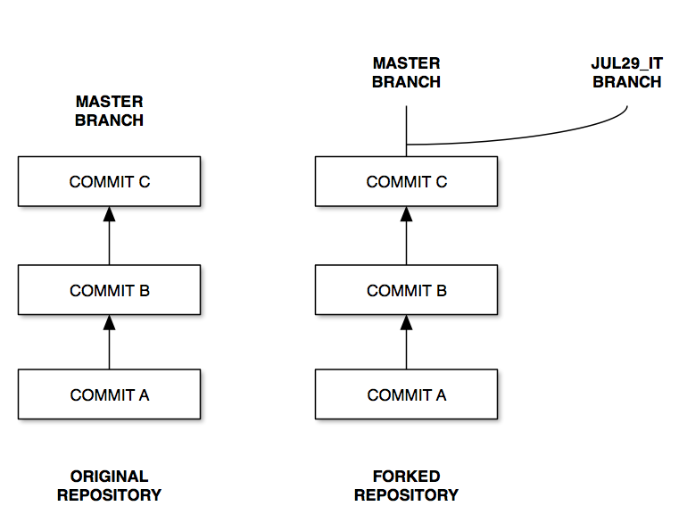
		<p>At this point your local files are on the branch called <code>jul29_it</code>. You can always check the current branch or the files modified by running <code>git status</code>:</p>
        <pre>
On branch jul29_it
nothing to commit, working directory clean
        </pre>
        <p>Update the files and, when you’re ready, commit your changes using these commands. In this case I’m updating Italian and the file is <code>locale/it/LC_MESSAGES/messages.po</code> (side note: don’t commit .mo files, they’re compiled from .po and not necessary).</p>
		<pre>
# Add the updated file to the commit
git add locale/it/LC_MESSAGES/messages.po

# Commit with a meaningful message
git commit -m "Updated Italian localization"

# Push changes to GitHub
git push origin jul29_it</pre>
        <p>At this point your branch will be one commit ahead of master.</p>
        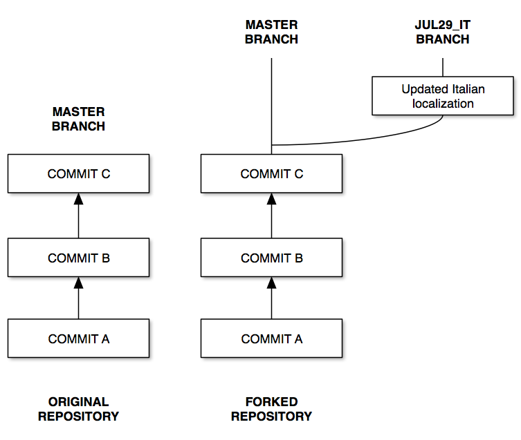
		<p>Now you can go to your forked repository on GitHub and you will see something like this.</p>
        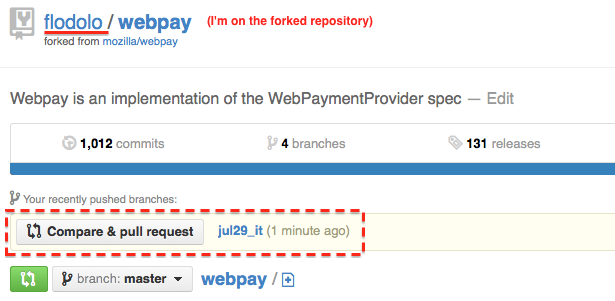
		<p>Click on the button <strong>Compare &amp; pull request</strong>, check the pull request (you can see the diff at the bottom of the page) and if everything looks good click on the green button <strong>Send pull request</strong> to complete the procedure.
        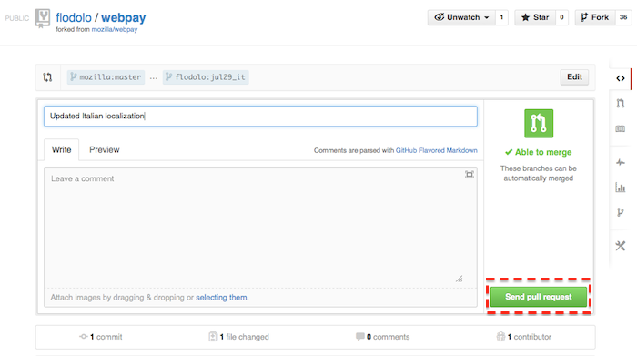
        You’ll receive an email when the pull request is merged into the project, or if there’s a problem with the pull request and someone added a comment. If necessary, you can modify or close your pull request from the <a href="https://github.com/mozilla/webpay/pulls">project’s pull requests list</a> (select your pull request, the <code>Close</code> button is at the end of the screen).
        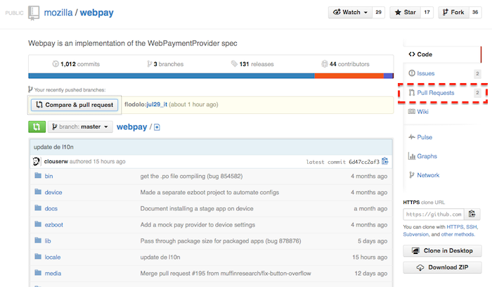
        </p>

        <h1>Advanced Usage</h1>
        <h2 id="rebase">Rebase Your Branch</h2>
        <p>Let’s consider the following situation: your master and the upstream’s master are in sync, on top of the history there’s “COMMIT B”. You created a branch called “TEST1”, made some changes and committed. In the meantime, someone has pushed a new commit to the upstream’s master.</p>
        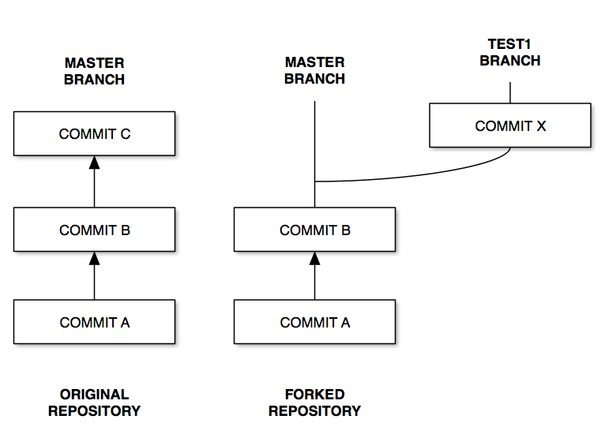
        <p>If you’re lucky, “COMMIT C” and “COMMIT X” won’t have any conflicts and your PR can be merged. If the two commits touch the same file, you’ll probably need to <em>rebase</em> your branch to be able to merge the pull request.</p>
        <p>The first thing you need to do is to <a href="#sync">update your master</a>, and sync with upstream.</p>
        <pre>
# Switch to master
git checkout master

# Update your master, push changes to repo
git fetch upstream
git merge upstream/master
git push

# Go back to your branch
git checkout test1
        </pre>
        <p>Now you’re in the following condition: master looks up to date, but your branch is still missing “COMMIT C”.</p>
        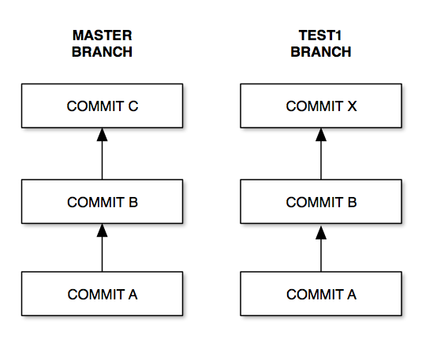
        <p>Let’s rebase against master:</p>
        <pre>git rebase master</pre>
        <p>If there are conflicts, you’ll get a message similar to the following:</p>
        <pre>
First, rewinding head to replay your work on top of it...
Applying: Commit X
Using index info to reconstruct a base tree...
M   test.txt
Falling back to patching base and 3-way merge...
Auto-merging test.txt
CONFLICT (content): Merge conflict in test.txt
Failed to merge in the changes.
Patch failed at 0001 Commit X
The copy of the patch that failed is found in:
   /Users/flodolo/Desktop/testdoc/.git/rebase-apply/patch

When you have resolved this problem, run "git rebase --continue".
If you prefer to skip this patch, run "git rebase --skip" instead.
To check out the original branch and stop rebasing, run "git rebase --abort".
        </pre>
        <p>Git is unable to merge the conflicts, so you need to manually fix the issue. In this case the file is called <code>test.txt</code>, and its content will look like this</p>
        <pre>
<<<<<<< HEAD
First commit
=======
First real commit
>>>>>>> Commit X
        </pre>
        <p>Before <code>=======</code> there’s the text from master, below the text from the branch’s commit. At this point you can fix the merge conflict, tell Git to include the file, continue the rebase and force push to the remote repository.</p>
        <pre>
git add test.txt
git rebase --continue
        </pre>
        <p>If you haven’t already pushed your commits to GitHub, you can use <code>git push</code>. Otherwise you’ll need to do a forced push with <code>git push -f</code>, since since you’re rewriting history.</p>
        <p>This is the result of rebasing against master.</pre>
        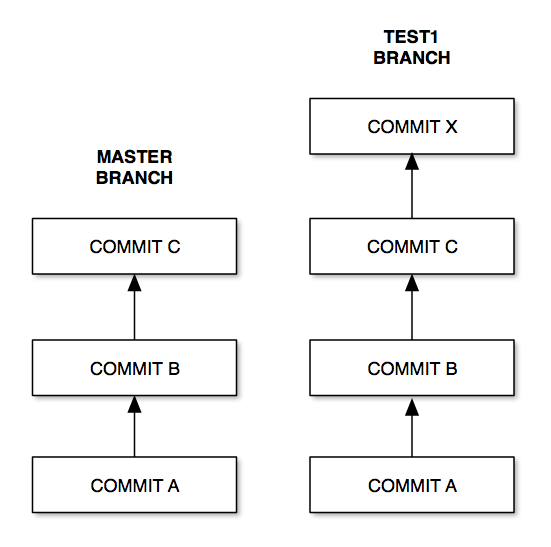
        <p class="warning">Never use a forced push on a shared repository or a shared branch. It will rewrite history, and any change not available in your local repository will be deleted.</p>

        <h2 id="reset">Reset Your Branch</h2>
        <p>Making mistakes is easy. For example, you committed to your master instead of using a branch. How do you recover from that? You can <em>reset</em> your repository to a different state.</p>
        <p>For example, let’s assume that you committed your changes to master, and want to go back. One thing that you could is to reset your repository to the same state of the origin’s master (remember, origin is your repository, the one your clone originated from).</p>
        <pre>git reset --hard origin/master</pre>
        <p>If you already pushed your changes to master, you can always reset to upstream’s master</p>
        <pre>git reset --hard upstream/master</pre>
        <p>If you want to remove extra-files (not tracked by Git) you can run:</p>
        <pre>git clean -fd</pre>

        <h2 id="amend">Amend The Last Commit</h2>
        <p>You committed some changes to your repository, but realized that you made a mistake and want to fix it without creating a new commit.</p>
        <p>Make the needed changes like you would do for a normal commit, but at the end run <code>git commit</code> with the <code>--amend</code> parameter:</p>
        <pre>git commit --amend</pre>
        <p>Don’forget to add the files to your commit before running <code>git commit</code>. It’s also possible to add all files, but always double check what you’re committing.</p>
        <pre>git commit -a --amend</pre>
        <p>You’ll be asked to confirm the new commit message. If you haven’t already pushed your commits to GitHub, you can use <code>git push</code>. Otherwise you’ll need to do a forced push with <code>git push -f</code>, since since you’re rewriting history.</p>

        <h2 id="squash">Squash Your Commits</h2>
        <p>Sometimes you’ll be asked to <em>squash</em> your commits. Let‘s say you created a new branch in your repository, and the <em>tip</em> of your branch has a message “Last commit on master”.</p>
        <pre>
git log -n 1
commit 08bff51037bc12362a986049d9feabda120933f0
Author: Francesco Lodolo (:flod) <flod@lodolo.net>
Date:   Fri May 8 08:16:24 2015 +0200

    Last commit on master
        </pre>
        <p>You made a first commit to update a file, then realized that you made a mistake and added a second commit to fix the error instead of <a href="#amend">amending</a> your last commit.</p>
        <pre>
git log -n 3
commit 3e086e54673229fa5a3c8fe08b77b45482151b3f
Author: Francesco Lodolo (:flod) <flod@lodolo.net>
Date:   Fri May 8 08:18:45 2015 +0200

    Fix Typo

commit 496ff879e92998971a8e2c886fa20be3e29cfb2b
Author: Francesco Lodolo (:flod) <flod@lodolo.net>
Date:   Fri May 8 08:18:32 2015 +0200

    Add new String

commit 08bff51037bc12362a986049d9feabda120933f0
Author: Francesco Lodolo (:flod) <flod@lodolo.net>
Date:   Fri May 8 08:16:24 2015 +0200

    Last commit on master
</pre>
        <p>This is how your branch currently looks like.</p>
        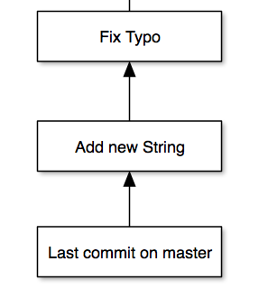
        <p>When merged, both commits will be available in the history of the main repository, making it less readable and useful. To collapse the last 2 commits you can run this command:</p>
        <pre>git rebase -i HEAD~2</pre>
        <p>You’re asking git to rebase interactively your branch, changing the last 2 commits from the HEAD of the branch (to squash 3 commits change to HEAD~3, etc.). You’ll be presented with a screen like this one</p>
        <pre>
pick 496ff87 Add new String
pick 3e086e5 Fix Typo

# Rebase 08bff51..3e086e5 onto 08bff51 (2 command(s))
#
# Commands:
# p, pick = use commit
# r, reword = use commit, but edit the commit message
# e, edit = use commit, but stop for amending
# s, squash = use commit, but meld into previous commit
# f, fixup = like "squash", but discard this commit's log message
# x, exec = run command (the rest of the line) using shell
#
# These lines can be re-ordered; they are executed from top to bottom.
#
# If you remove a line here THAT COMMIT WILL BE LOST.
#
# However, if you remove everything, the rebase will be aborted.
#
# Note that empty commits are commented out
        </pre>
        <p>You need to tell Git that you want to keep the oldest commit (first in the list), and squash the more recent commit. You could also decide to reword a commit if needed. To squash the commits change the first two lines like this, save and continue.</p>
        <pre>
pick 496ff87 Add new String
squash 3e086e5 Fix Typo
        </pre>
        <p>Then you’ll be asked to confirm the commit message (it will automatically present you with the commit message of both commits). This is how the log will look like after squashing the commits.</p>
        <pre>
git log -n 2
commit 8cf7d79f8345d513b878467c8e1f71f88a1c5e2b
Author: Francesco Lodolo (:flod) <flod@lodolo.net>
Date:   Fri May 8 08:18:32 2015 +0200

    Add new String

commit 08bff51037bc12362a986049d9feabda120933f0
Author: Francesco Lodolo (:flod) <flod@lodolo.net>
Date:   Fri May 8 08:16:24 2015 +0200

    Last commit on master
        </pre>
        <p>If you haven’t already pushed your commits to GitHub, you can use <code>git push</code>. Otherwise you’ll need to do a forced push with <code>git push -f</code>, since since you’re rewriting history.</p>

        <h2 id="bash">Bash Tips</h2>
        <p>It’s very useful to display in your command line the current branch when you’re in folder containing a Git repository. You can obtain this by adding some lines to your configuration file.</p>
        <h3>Linux</h3>
        <p>Add these lines at the bottom of <code>.bash_rc</code> in your home folder</p>
        <pre>
alias ls='ls --color=auto'
PS1="\[\e[1;32m\][\u@\h \W]\$(parse_git_branch)\[\e[0m\] "

function parse_git_branch () {
       git branch 2> /dev/null | sed -e '/^[^*]/d' -e 's/* \(.*\)/ (\1)/'
}
        </pre>
        <h3>OS X</h3>
        <p>Add these lines at the bottom of <code>.bash_profile</code> in your home folder</p>
        <pre>
export PATH=/usr/local/git/bin:$PATH

# Colors in Terminal
export CLICOLOR=1
export LSCOLORS=GxFxCxDxBxegedabagaced

# Git branch in prompt.
parse_git_branch() {
    git branch 2> /dev/null | sed -e '/^[^*]/d' -e 's/* \(.*\)/ (\1)/'
}
export PS1="\u@\h \W\[\033[32m\]\$(parse_git_branch)\[\033[00m\] $ "
        </pre>
		<h2 id="final">Final Suggestions</h2>
		<ul>
            <li>If something goes wrong, you can always delete your forked repository and start from scratch, or return to the branch Master (see Update section) and create a new clean branch to start from. As a personal suggestion, don’t ever commit to Master, just create new branches for your own changes.</li>
            <li>Always update your forked repository before creating new branches.</li>
            <li>If you create a pull request from the branch jul29_it and push other commits to the same branch, the pull request will be automatically updated. In other words: if you don’t want to change your original pull request, don’t push to that branch until the pull request is approved and merged.</li>
        </ul>

        <p>Note: this doc is available on <a href="https://github.com/flodolo/docs/tree/master/github_l10n">GitHub</a>. If you want to improve it, you should know how do it now ;-) </p>
		<p class="update">Last updated: 2015-05-08</p>
	</div>
</body>
</html>
